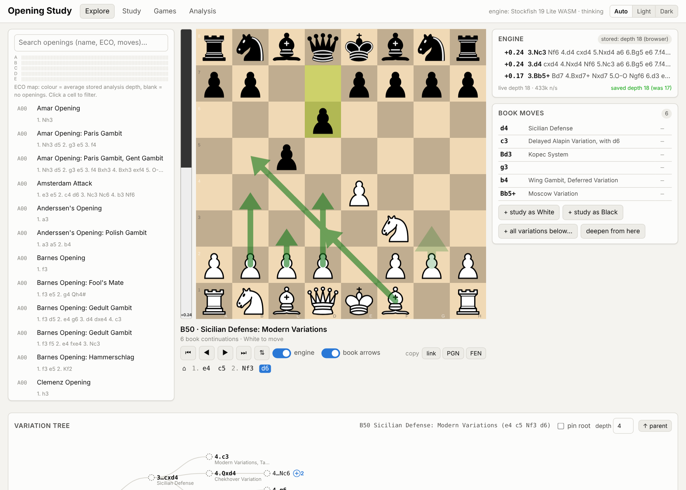

A self-hosted app for exploring the full lichess opening book, drilling the lines you choose, and building a stored Stockfish analysis that improves the longer it runs.

3,800 named openings as a move tree, with book arrows, stored evaluations and a variation tree coloured by who is better.
Drill lines as White or Black with a Leitner schedule, so “Drill due” always serves what you are about to forget.
Stockfish 19 in the browser and on the server. Results are only ever replaced by deeper ones, and transpositions share them.
Import a PGN and see which openings you play and how they score, right on the board and in the tree.
The app needs a server for its analysis database, so this page is a tour rather than a live demo. Requires Node.js 22.5+.
git clone https://github.com/aryavolkan/chess-opening-study cd chess-opening-study npm install npm start # http://127.0.0.1:3000
Or with Docker: docker run -p 3000:3000 -v study:/data ghcr.io/aryavolkan/chess-opening-study